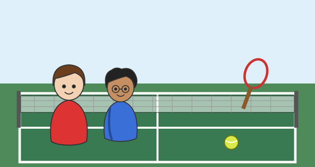

Wer macht was? Die Pronomen
Mit einem KI-Tutor lernen
Ein KI-Tutor erklärt dir diese Seite und hilft dir bei den Übungen. Wähl deinen Assistenten:
Mit Claude öffnen Mit ChatGPT öffnen Mit Mistral Vibe öffnen
Du nutzt dein eigenes Konto beim Anbieter. Der Assistent ist kein Angebot von lernapps.net: lernapps liefert nur Inhalte und Übungen. Die Wahl gilt für alle Seiten, nur auf diesem Gerät.
Worum es geht

Léa (links) und Malik (rechts) beim Fußballtraining.
Quelle: eigene Zeichnung. Lizenz: CC-BY-4.0.Beim Training spricht Léa über sich, über Malik und über beide zusammen. Im Deutschen sagst du dafür „ich“, „er“, „sie“ oder „wir“. Diese kleinen Wörter heißen Pronomen: Sie stehen für Personen, damit du ihre Namen nicht immer wiederholen musst.
Danach kannst du: die neun französischen Pronomen je, tu, il, elle, on, nous, vous, ils und elles verwenden.
Neu: Die neun Pronomen
- Pronomen
Ein Pronomen ist ein kleines Wort, das für eine Person oder Sache steht, zum Beispiel „er“ oder „wir“.
| Pronomen | Bedeutung |
|---|---|
| je (j' vor a, e, i, o, u) | ich |
| tu | du |
| il | er (ein Junge, ein Mann) |
| elle | sie (ein Mädchen, eine Frau) |
| on | man, oft auch „wir“ |
| nous | wir |
| vous | ihr, oder „Sie“ (höflich) |
| ils | sie (Jungen oder gemischte Gruppe) |
| elles | sie (nur Mädchen oder Frauen) |
Zu jedem Pronomen gehört ein Verb, und das Verb verändert sich mit dem Pronomen. Wie das genau geht, lernst du später. Jetzt lernst du die Wendungen als Ganzes kennen: Je m'appelle Léa. — Tu t'appelles Malik. — Il s'appelle Malik. — Elle s'appelle Léa. — Nous jouons au foot. (jouer au foot heißt „Fußball spielen“.)
Merke
il ist nur ein Junge oder ein Mann, elle nur ein Mädchen oder eine Frau. Bei einer Gruppe nimmst du ils, sobald ein Junge dabei ist, auch wenn viele Mädchen dabei sind. elles sagst du nur, wenn alle Mädchen sind.
Hören und nachsprechen
Zuerst einzelne Sätze: Léa spricht Je m'appelle Léa., Elle s'appelle Léa. und Nous jouons au foot. vor, Malik Tu t'appelles Malik. und Il s'appelle Malik. Höre zu, nimm dich selbst auf und vergleiche. Bewerte danach, wie es klang.
Übung
Hör zu, sprich nach und nimm dich auf. Vergleiche dann mit dem Original.
Tipp
Sprich langsam und achte auf den Laut ou in nous und jouons: Er klingt wie ein langes „u“.
- Je m'appelle Léa.KI
- Tu t'appelles Malik.KI
- Il s'appelle Malik.KI
- Elle s'appelle Léa.KI
- Nous jouons au foot.KI
Zum Aufnehmen braucht diese Übung JavaScript. Die Beispiele kannst du auch ohne anhören.
Lösung
- Je m'appelle Léa.
- Tu t'appelles Malik.
- Il s'appelle Malik.
- Elle s'appelle Léa.
- Nous jouons au foot.
Jetzt ein Satz, in dem das Pronomen die Namen ersetzt: Malik sagt Léa et Malik jouent au foot. Ils jouent au foot. Sprich beide Sätze in einem Zug.
Übung
Hör zu, sprich nach und nimm dich auf. Vergleiche dann mit dem Original.
Tipp
ils am Anfang klingt wie „il“: Das s am Ende hörst du nicht.
- Léa et Malik jouent au foot. Ils jouent au foot.KI
Zum Aufnehmen braucht diese Übung JavaScript. Die Beispiele kannst du auch ohne anhören.
Lösung
- Léa et Malik jouent au foot. Ils jouent au foot.
Übung
Übung
Lösung
Richtige Antwort: Léa (ein Mädchen) – elle; Malik (ein Junge) – il; Léa und Malik – ils; zwei Mädchen – elles; du – tu
Für ein Mädchen nimmst du elle, für einen Jungen il. Eine gemischte Gruppe ist ils, nur Mädchen sind elles. Zu „du“ gehört tu.
Mehr dazu:
Übung
Wähle das passende Pronomen.
- Er heißt Malik. → … s'appelle Malik.
- Sie heißt Léa. → … s'appelle Léa.
- Wir spielen Fußball. → … jouons au foot.
- Du heißt Malik. → … t'appelles Malik.
Lösung
- Il s'appelle Malik.
- Elle s'appelle Léa.
- Nous jouons au foot.
- Tu t'appelles Malik.
Übung
Höre den Satz und schreibe ihn auf. Du kannst ihn so oft hören, wie du magst.
- KI
- KI
- KI
Lösung
- Il s'appelle Malik.
- Elle s'appelle Léa.
- Nous jouons au foot.
Übung
Schreibe den Satz auf Französisch.
- Er heißt Malik.
- Sie heißt Léa.
- Wir spielen Fußball.
Lösung
- Il s'appelle Malik.
- Elle s'appelle Léa.
- Nous jouons au foot. (auch richtig: Nous jouons au football.)